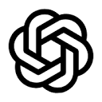

ADHD Stack · プロトタイプ画面：{{ screenLabel }}
ADHD Stack
Connect once. Build anything.何も考えずに、

 4つの接続で完結
4つの接続で完結
adhd.gawarago.com
何も考えずに、
始める。
OpenAI・GitHub・Cloudflare・Convex をつなぐだけ。チャットで話すと、コードが書き換わり、自分の環境に公開される。IDEは開かない。

サインイン
Google アカウントでログインします。続けて4つのサービスを接続します。
続行すると利用規約に同意したことになります。プロトタイプ · 認証情報は保存されません。おかえりなさい · 最後に見たのは昨日 18:12
留守中に、2つ進みました。
ログイン導線あなたの返事待ちtask-board · 昨日 18:40
どのログイン方法を足しますか？ — GitHub / メール / 両方答える →
モバイルUIできましたtask-board · 8分前
タスク一覧を「今日やること」と「完了」に分けました。2ファイル、プレビューに反映済み。プレビューを見る →
プロジェクト
進行中のプレビューから、すぐ続きを始められます。
作業中2
要確認1
検証待ち1
今週の本番反映3
| プロジェクト | 最新のプレビュー | 状態 | 本番 | 更新 | |
|---|---|---|---|---|---|
| {{ p.name }} | {{ p.session }} | {{ p.status }} | {{ p.url }} | {{ p.updated }} |
用意しています{{ newProjectName }} を
{{ st.mark }}{{ st.label }}
この画面を閉じても進みます。終わったら通知します。
{{ newProjectName }} を
つくっています。
待っている間に、最初の指示を書いておけます
準備が終わり次第、自動で始めます
{{ projectName }}／{{ activePreview.name }}{{ activePreview.state }}
チャット{{ activePreview.name }} と話しています
{{ m.text }}
考え中· {{ m.meta }}
{{ m.text }}
{{ m.text }}
$ {{ ln }}
●{{ m.text }}
変更 · {{ m.meta }}変更を見る →{{ f.path }}{{ f.add }} {{ f.del }}
あなたの返事を待っています{{ m.text }}
確認が必要{{ m.text }}
{{ m.note }}
{{ m.cmd }}
✓消す前に保存ポイントを自動で作ります。7日間戻せます鍵を入れる · プレビュー「{{ activePreview.name }}」用チャットの記録には残らず、環境ごとに暗号化して保存します。本番に反映する時に本番用を聞きます。
今日の上限に達しましたここまでの作業は保存してあります。OpenAI の利用枠（5時間ごと）を使い切りました。14:00 に自動で続きから再開します。
{{ m.meta }}{{ m.text }}
試す：
{{ panelTitle }}{{ panelSub }}
{{ sourceFile }}{{ sourceNote }}
変更 · {{ changeCount }}ファイル
{{ f.path }}{{ f.add }} {{ f.del }}
最後の保存ポイント以降、変更はありません。
{{ d.text }}
作業を止めずに聞ける相談窓口ここでの会話はコードを変えません。「これどういう意味？」「この後どうする？」を左の作業と並行して。使えそうな答えは「左に送る」で指示にできます。
{{ sm.text }}
{{ sm.text }}
●{{ sm.text }}
ターミナルCloudflare Sandbox · {{ activePreview.name }} · /workspace/{{ projectName }}
{{ t.text }}
$
反映に失敗たった今
本番は {{ prodVersion }} のまま動いています。検証 {{ stagingVersion }} → 本番 の反映がビルドの途中で止まりました。本番の環境変数に RESEND_API_KEY がありません。誰にも影響は出ていません。環境
プレビューで試し、検証で確かめ、本番に出す。プレビューはいくつでも作れます。
プレビュー {{ previewCount }}自由に作って壊せる
検証本番に出す前に確かめる
{{ stagingVersion }}{{ stagingTag }}
staging.adhd.gawarago.com ↗{{ stagingMeta }}本番との差{{ stagingDiff }}
新しいプロジェクト
自動で用意されるものGitHubMichitoSugawara/{{ newProjectName }}実行環境Cloudflare Sandbox本番 / 検証{{ newProjectName }}.pages.devConvexgawa/{{ newProjectName }}
新しいプレビュー
{{ newPreviewSlug }}.preview.adhd.gawarago.com
{{ activePreview.name }} → 検証
検証へ送りますか？
staging.adhd.gawarago.com が新しい版になります。本番には影響しません。
含まれる保存ポイント{{ pi.title }}{{ pi.when }}
{{ activePreview.name }} → 検証
「ログイン導線」と同じ場所を変えています
先に検証へ送られた「ログイン導線」が app/layout.tsx のヘッダーを変えていて、こちらも同じ場所を変えています。どうしますか？
検証にあるもの
<header>
<Logo /><LoginMenu />
</header>
あなたのプレビュー
<header>
<Logo compact /><MenuButton />
</header>
検証 {{ stagingVersion }} → 本番
本番へ反映しますか？
adhd.gawarago.com が {{ stagingVersion }} になります。反映は約20秒。うまくいかなければ「前の版に戻す」で {{ prodVersion }} にすぐ戻せます。
データについて本番のデータ（Convex gawa/{{ projectName }}）はそのまま。新しい列は自動で追加されます。
プロトタイプ：成功／失敗を選べます
保存ポイントに名前を付ける
保存は AI の各ターン後に自動でされています。名前は履歴で見つけやすくするためだけのものです。
{{ oauthName }} で認可
別ウィンドウで {{ oauthName }} のアカウントを選ぶと、ここに戻ってきます。
●{{ toast }}
操作：Google で続ける → Convex を接続 → 一覧 → 新規プロジェクト → エディタでチャット（Enter 送信）／画面のタスクをタップ → 検証へ送る → 環境で本番へ反映（失敗も試せる）。エディタ下の「試す：」で質問・危険操作・鍵・上限・切断を再現。